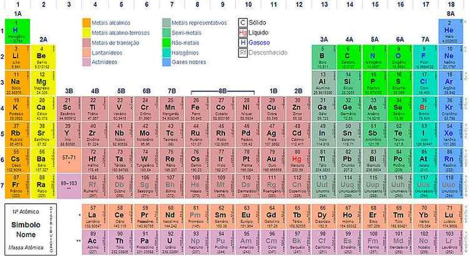

As ligações químicas correspondem à união dos átomos para a formação das moléculas. Em outras palavras, as ligações químicas acontecem quando os átomos reagem entre si.
São classificadas em: ligação iônica, ligação covalente, ligação covalente dativa e ligação metálica.
Na Teoria do Octeto, criada por Gilbert Newton Lewis (1875-1946), químico estadunidense e Walter Kossel (1888-1956), físico alemão, surgiu a partir da observação de alguns gases nobres e algumas características como por exemplo, a estabilidade desse elementos preenchidas por 8 elétrons na Camada de Valência.
A partir disso, a "Teoria ou Regra do Octeto" postula que um átomo adquire estabilidade quando possui 8 elétrons na camada de valência (camada eletrônica mais externa), ou 2 elétrons quando possui apenas uma camada.
Para tanto, o átomo procura sua estabilidade doando ou compartilhando elétrons com outros átomos, donde surgem as ligações químicas.
Também chamada de ligação eletrovalente, esse tipo de ligação é realizada entre íons (cátions e ânions), daí o termo "ligação iônica".
Os Íons são átomos que possuem uma carga elétrica por adição ou perda de um ou mais elétrons, portanto um ânion, de carga elétrica negativa, se une com um cátion de carga positiva formando um composto iônico por meio da interação eletrostática existente entre eles.
Também chamada de ligação molecular, as ligações covalentes são ligações em que ocorre o compartilhamento de elétrons para a formação de moléculas estáveis, segundo a Teoria do Octeto; diferentemente das ligações iônicas em que há perda ou ganho de elétrons.
Além disso, os pares eletrônicos é o nome dado aos elétrons cedido por cada um dos núcleos, figurando o compartilhamento dos elétrons das ligações covalentes.
Como exemplo, observe a molécula de água H2O: H - O - H, formada por dois átomos de hidrogênio e um de oxigênio em que cada traço corresponde a um par de elétrons compartilhado formando um molécula neutra, uma vez que não há perda nem ganho de elétrons nesse tipo de ligação.
Também chamada de ligação coordenada, a ligação covalente dativa é semelhante à dativa, porém ela ocorre quando um dos átomos apresenta seu octeto completo, ou seja, oito elétrons na última camada e o outro, para completar sua estabilidade eletrônica necessita adquirir mais dois elétrons.
epresentada por uma seta um exemplo desse tipo de ligação é o composto dióxido de enxofre SO2: O = S → O
Isso ocorre porque é estabelecida uma dupla ligação do enxofre com um dos oxigênios a fim a de atingir sua estabilidade eletrônica e, além disso, o enxofre doa um par de seus elétrons para o outro oxigênio para que ele fique com oito elétrons na sua camada de valência.
É a ligação que ocorre entre os metais, elementos considerados eletropositivos e bons condutores térmico e elétrico. Para tanto, alguns metais perdem elétrons da sua última camada chamados de "elétrons livres" formando assim, os cátions.
A partir disso, os elétrons liberados na ligação metálica formam uma "nuvem eletrônica", também chamada de "mar de elétrons" que produz uma força fazendo com que os átomos do metal permaneçam unidos. Exemplos de metais: Ouro (Au), Cobre (Cu), Prata(Ag), Ferro (Fe), Níquel (Ni), Alumínio (Al), Chumbo (Pb), Zinco (Zn), entre outros.
